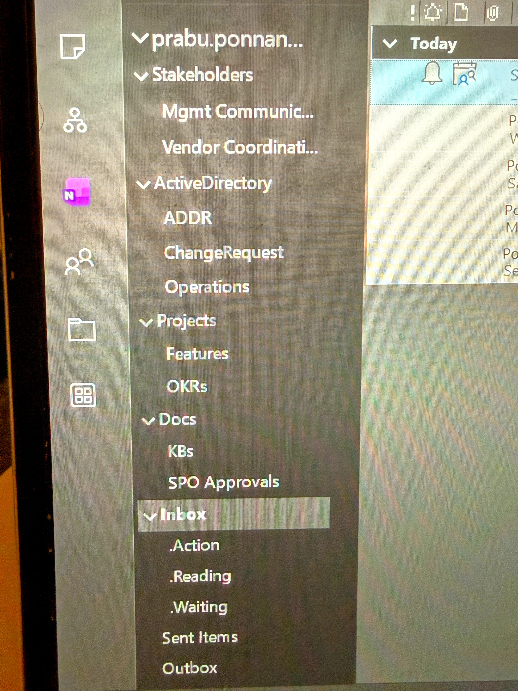

Desk Hub
Quick tabs to jump between email replies, daily to-dos, and OKRs.
என் நேரமும் கவனமும் என் முழுக் கட்டுப்பாட்டில் உள்ளன. நான் வேலைகளைச் சேர விடுவதில்லை; உடனடியாக முடிவெடுக்கிறேன். நான் என் இன்பாக்ஸைப் பார்க்கும் போது: 'இது என்ன?' மற்றும் 'நான் என்ன செய்ய வேண்டும்?' என்று கேட்கிறேன்.
2 நிமிடங்களுக்குக் குறைவாக இருந்தால், அதை இப்போதே செய்கிறேன். பின்னர் செய்ய வேண்டியவை என்றால், அதை செயல், வாசிப்பு அல்லது காத்திருப்பு என ஒழுங்குபடுத்துகிறேன்.
என் இன்பாக்ஸ் ஒரு சேமிப்பு கிடங்கு அல்ல; அது ஒரு முடிவெடுக்கும் இடம். நான் தெளிவுடன் செயல்படுகிறேன், நோக்கத்துடன் ஒழுங்கமைக்கிறேன்.
தமிழிலும் ஆங்கிலத்திலும் — செயல்முறை தெளிவுக்கும் ஒழுங்குக்கும்.
தமிழ் (Tamil)
2 நிமிட விதி: 2 நிமிடத்திற்குள் முடிந்தால், உடனே செய்யவும்; வரிசைப்படுத்த வேண்டாம்.
Sort விதி: 2 நிமிடத்தை மீறினால், Action கோப்புறைக்கு நகர்த்தவும்.
English
2-Minute Rule: If it takes under 2 minutes, do it now. Don’t sort it.
Sort Rule: If it takes over 2 minutes, move to the Action folder to handle later.
Tamil first, then English — keep the inbox flowing.
தமிழ் (Tamil)
English
Top-To-Bottom + Two Minute Rule — Tamil first, English below.
தமிழ் (Tamil)
"Email Ninja" தத்துவம்
Discipline 1: Top-To-Bottom Rule
Discipline 2: 2 நிமிட விதி
செயலாக்கம் (Execution Strategy)
முக்கிய கருத்து:
ஒரு மெயிலை முழுமையாக தெளிவுபடுத்திவிட்டால் அது முடிந்தது. Flag / unread வைத்து விட்டால், சுமை தொடர்கிறது.
English
The "Email Ninja" Philosophy
Discipline 1: Top-To-Bottom Rule
Discipline 2: Two Minute Rule
Execution Strategy
Key takeaway:
If you fully clarify an email now, it’s done. Flagging/marking unread keeps the burden.
Set a rule so anything you BCC to yourself skips the Inbox and lands in Waiting.
Result: any email you BCC to yourself bypasses the Inbox and goes straight to Waiting.
Review cadence
Process the Waiting folder twice a week: Tuesday and Thursday.
Block time in Outlook as a recurring slot so it actually happens. Be disciplined with the schedule.
email-களை நிறைய folders-ல பிரிச்சு சேமிக்காம, மிகக் குறைந்த folders-ல சேர்த்து வைப்பது. அதிக folders இருந்தால் ஒவ்வொரு mail வந்தாலும் “எந்த folder-ல போடலாம்?”ன்னு யோசிக்க வேண்டி வரும்; இதுதான் decision fatigue. PILING முறையில் அந்த குழப்பம் கிடையாது — mail படிச்சு action முடிச்சதும் உடனே archive பண்ணிடலாம். இதனால் inbox எப்போதும் clean-ஆ இருக்கும், email manage பண்ணுவது easy-ஆ மாறும்.
ஆனா PILINGன்னு சொன்னாலே ஒரே folder மட்டும் இல்ல; Maximum 5 folders இருக்கணும். உதாரணமா: Archive (பெரும்பாலான mails), Projects (long-running projects), Leadership & Decisions (approvals, decisions), Vendors & External (outside communication), Learning (training, certifications).
இந்த few folder structure இருந்தாலே போதும். மீதி எல்லாத்துக்கும் Outlook search உதவும் — sender, keyword, date, attachment வைத்து mail-ஐ சீக்கிரமா கண்டுபிடிக்கலாம்.
இதுதான் PILING-னுடைய உண்மையான பலம்.
Search Option என்பது PILING முறையின் உயிர் மாதிரி. ஏனென்றால் folders குறைவா இருந்தா, பழைய email-களை கண்டுபிடிக்க நம்ம search-ஐ நம்பித்தான் ஆகணும்.
Outlook-ல மேலே இருக்கும் search bar-ஐ use பண்ணி, தேவையான mail-ஐ சீக்கிரமா கண்டுபிடிக்கலாம். Search bar-க்கு பக்கத்துல இருக்கும் மூன்று கோடுகள் (≡) click பண்ணினா, search-ஐ refine பண்ண பல options வரும். இதை சரியா use பண்ண தெரிஞ்சா, பெரிய folder structure தேவையே இருக்காது.
Search options-ல முக்கியமானது From (யார் mail அனுப்பினாங்க), Keyword (subject அல்லது mail body-ல இருக்கும் வார்த்தைகள்), Date (எந்த மாதம் / காலகட்டம்), Read / Unread status, Has Attachment. முதல்ல ஒரு option-ஐ மட்டும் select பண்ணி search பண்ணணும்; results அதிகமா வந்தா அடுத்த option-ஐ add பண்ணலாம். 50–200 mails வர்ற மாதிரி search narrow பண்ணினா அது ஒரு perfect folder-க்கு சமம். இப்படி search practice பண்ணப் பண்ண, email retrieve பண்ணுவது fast-ஆவும், confident-ஆவும் மாறும் — இதுதான் PILING system முழுசா work ஆகுற காரணம்.
என் நேரமும் கவனமும் என் முழுக் கட்டுப்பாட்டில் உள்ளன. நான் வேலைகளைச் சேர விடுவதில்லை; உடனடியாக முடிவெடுக்கிறேன்.
தினமும் இரவில் உறங்கும் முன், அடுத்த நாளுக்கான வேலைகளைத் திட்டமிட்டு, அவற்றை என் பணிப் பட்டியலில் எழுதி வைக்கிறேன்.
தினமும் காலையில் தியானத்திற்குப் பிறகு, என் பணிப் பட்டியலைப் பார்க்கும்போது: 'இது என்ன?' மற்றும் 'நான் என்ன செய்ய வேண்டும்?' என்று தெளிவாகக் கேட்கிறேன்.
Objective 1: Deliver a reliable onboarding experience
Objective 2: Strengthen customer trust
Objective 3: Operate efficiently
Decisions, owners, due dates:
Key themes to reinforce:
Key takeaways and drills: